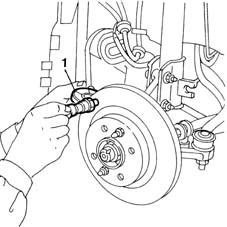

3310A54 front brake discs removed - grind
- Path
- Procedures > 33 BRAKING SYSTEM > 3310 DISC BRAKES > 3310A FRONT DISC BRAKES > 3310A54 front brake discs removed - grind
- Kind
- repair procedure (removal / refitting; the operation number is the code)
- Applies to
- all engines; all production periods
- Interactive page
- https://sloeber94.github.io/elrnDB-fMltpl/en/#/2891576
Applies to: all engines; all production periods
1. Check the brake disc thickness. If the value measured is below the recommended figure, the disc should be replaced.
In the case of deterioration or deep grooves, the surface of the brake disc should be ground.
After grinding, check that the thickness is within the recommended values.
 | Measurement | Value | |
|---|---|---|---|
- | New disc thickness (mm) | 11.8 - 12.1 |
| Measurement | Value | |
|---|---|---|---|
- | Minimum permissible thickness for wear (mm) | 10.20 |
| Measurement | Value | |
|---|---|---|---|
- | Minimum permissible disc thickness after refacing (mm) | 10.55 |
